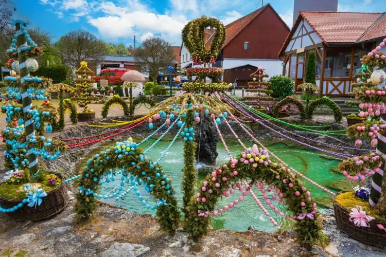

Na Alemanha, a Páscoa é celebrada com tradições muito bonitas e diferentes. Assim como em outros países, a data tem significado religioso, pois representa a ressurreição de Jesus Cristo. Muitas famílias participam de cultos e celebrações nas igrejas, especialmente no domingo de Páscoa.

Uma das tradições mais famosas do país é a decoração de árvores com ovos coloridos, conhecidas como árvores de Páscoa. Esses enfeites deixam casas, jardins e praças mais alegres e representam a chegada da primavera e a renovação da vida. As crianças também participam de brincadeiras e procuram ovos escondidos.
Além disso, a Alemanha valoriza bastante o clima familiar durante a Páscoa. As famílias costumam se reunir, trocar doces e fazer refeições especiais. Assim, a Páscoa alemã é marcada por símbolos coloridos, tradições encantadoras, religiosidade e momentos de união.